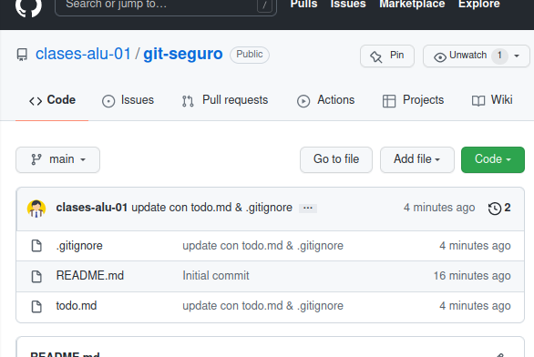
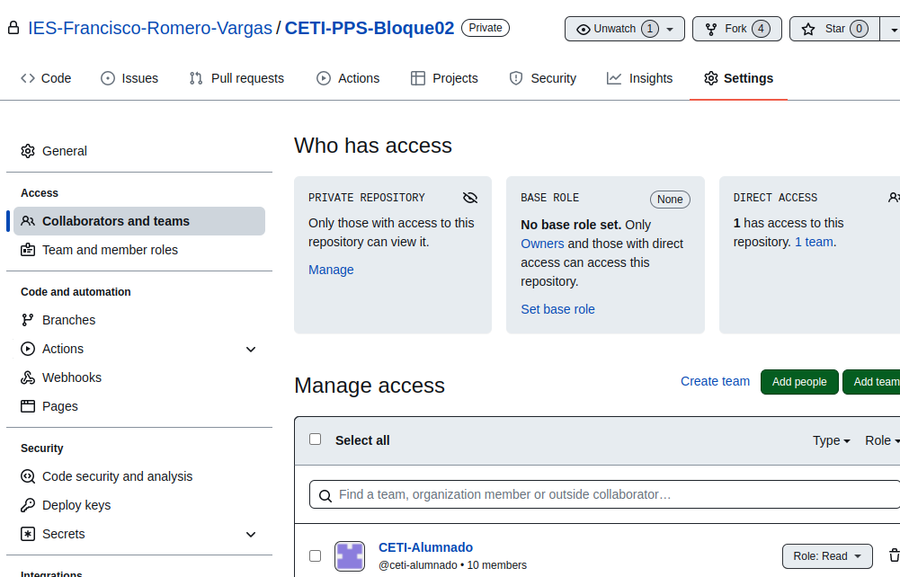
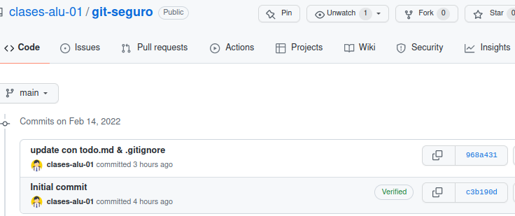
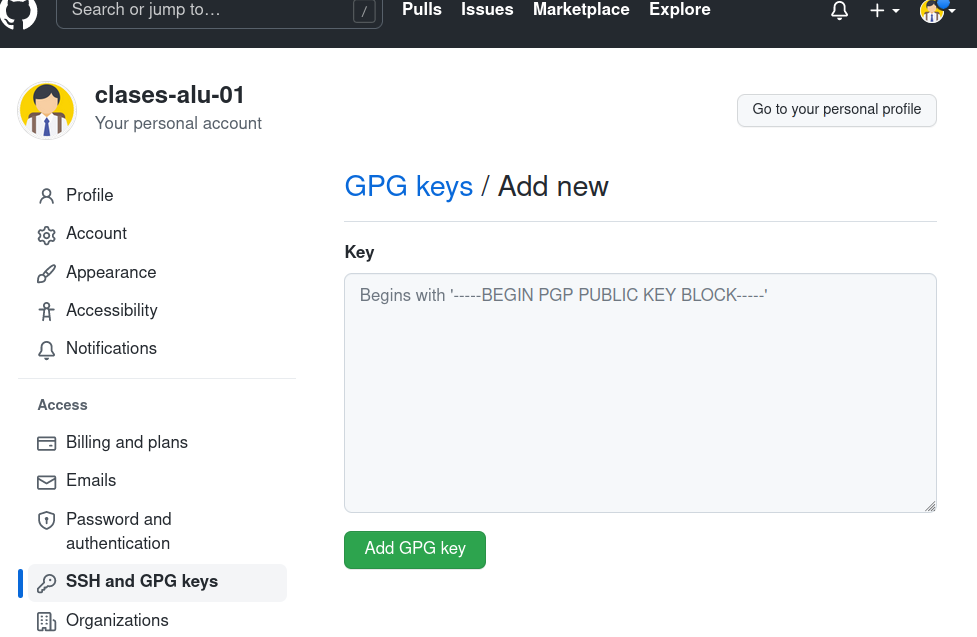
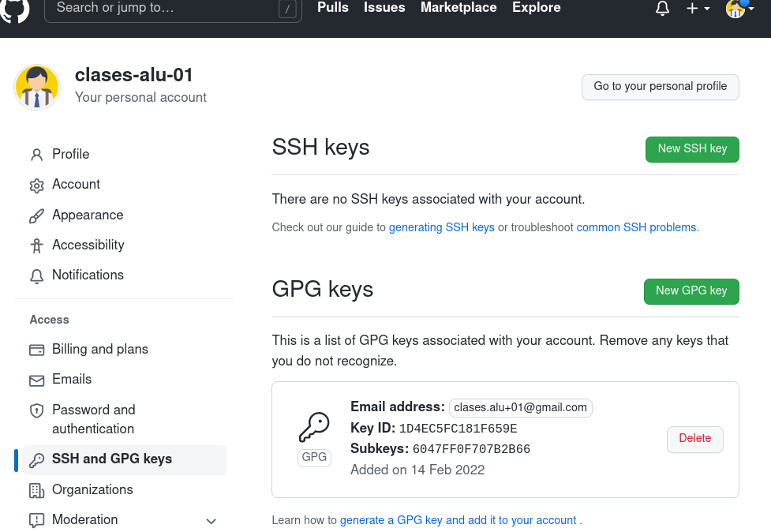
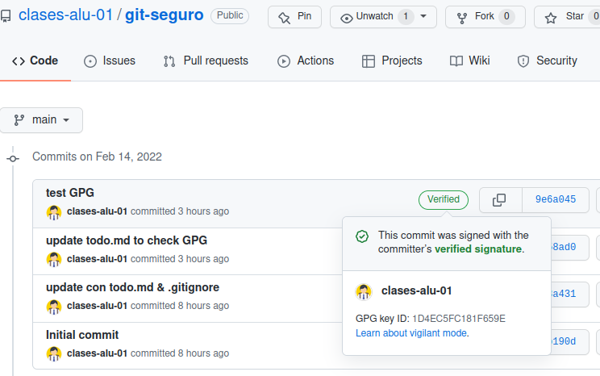

Git seguro¶
Se exponen distintas formas de trabajar de una forma más segura con git y GitHub.
1. Fichero .gitignore¶
El fichero .gitignore permite especificar ficheros o carpetas del directorio de trabajo que no se añadirán al repositorio al hacer un git add . o similar.
Como ejemplo se crean algunos ficheros en un repositorio ya existente:
alu@tos:~/git-seguro$ git status
En la rama main
Tu rama está actualizada con 'origin/main'.
nada para hacer commit, el árbol de trabajo está limpio
alu@tos:~/git-seguro$ ls -a
. .. .git README.md
alu@tos:~/git-seguro$
Cree el fichero .env con información de configuración (que no quiere añadir ni al repositorio local ni al remoto), el fichero .gitignore y el fichero todo.md:
alu@tos:~/git-seguro$ nano .env
alu@tos:~/git-seguro$ nano .gitignore
alu@tos:~/git-seguro$ echo " # Todo " > todo.md
alu@tos:~/git-seguro$ cat .env
USER=clases@locla.com
TOKEN=1234567890QWERTYASDFGHH
alu@tos:~/git-seguro$ cat .gitignore
.env
venv/
alu@tos:~/git-seguro$
Observe que en el fichero .gitignore se han añadido dos líneas: una para ignorar el fichero .env y otra para ignorar si existe el directorio venv (posible entorno virtual)
Si hace git status verá que aunque hay ficheros nuevos sólo "rastrea" los que no están incluido en .gitignore: todo.md y el propio .gitignore, pero no .env:
alu@tos:~/git-seguro$ git status
En la rama main
Tu rama está actualizada con 'origin/main'.
Archivos sin seguimiento:
(usa "git add <archivo>..." para incluirlo a lo que se será confirmado)
.gitignore
todo.md
no hay nada agregado al commit pero hay archivos sin seguimiento presentes (usa "git add" para hacerles seguimiento)
alu@tos:~/git-seguro$
Observe que incluso haciendo un git add . el fichero .env no se añade al stage:
alu@tos:~/git-seguro$ git add .
alu@tos:~/git-seguro$ git status
En la rama main
Tu rama está actualizada con 'origin/main'.
Cambios a ser confirmados:
(usa "git restore --staged <archivo>..." para sacar del área de stage)
nuevo archivo: .gitignore
nuevo archivo: todo.md
alu@tos:~/git-seguro$
Haga push al repositorio remoto
alu@tos:~/git-seguro$ git push origin main
Username for 'https://github.com': clases.alu+01@gmail.com
Password for 'https://clases.alu+01@gmail.com@github.com':
Enumerando objetos: 5, listo.
Contando objetos: 100% (5/5), listo.
Compresión delta usando hasta 8 hilos
Comprimiendo objetos: 100% (2/2), listo.
Escribiendo objetos: 100% (4/4), 351 bytes | 351.00 KiB/s, listo.
Total 4 (delta 0), reusado 0 (delta 0)
To https://github.com/clases-alu-01/git-seguro.git
c3b190d..968a431 main -> main
alu@tos:~/git-seguro$
y puede comprobar en GitHub que se han añadido .gitignore y todo.md, pero no el fichero .env (ni el directorio venv si existiera).

Se pueden ignorar archivos individuales, directorios completos, o utilizar patrones. Tiene más información en este enlace: https://aprendegit.com/tag/gitignore/
Nota: existe la posibilidad al crear el repositorio en GitHub de marcar la opción de añadir un fichero
.gitignore, seleccionar el tipo de framewok o lenguaje a utilizar y GitHub crea un fichero.gitignoremuy completo. A pesar de usar.gitignoredebe ser precavido con el uso degit add .: a veces es preferible añadir los ficheros explícitamente.
2. Git leaks¶
https://github.com/zricethezav/gitleaks
Gitleaks is a tool for detecting secrets like passwords, API keys, and tokens in git repos, files, and whatever else you wanna throw at it via stdin.
- Primero descargue de (https://github.com/zricethezav/gitleaks/releases) el fichero adecuado a su sistema. En el caso de estas prácticas algo similar a
gitleaks_X.YY.Z.linux_x64.tar.gz. - Descomprimir el fichero y
- copiar el fichero
gitleaksal directorio/usr/local/bin(o incluir el directorio del ejecutable en el PATH).
Las reglas que se aplican las puede consultar en GitHub. Se aplican expresiones regulares para buscar tokens, API keys, etc. Para acceder a la ayuda:
$ gitleaks -h
Gitleaks scans code, past or present, for secrets
Usage:
gitleaks [command]
...
El uso básico de est comando podría ser:
gitleaks git: escanea el repositoriogitleaks git --staged: escanea lso ficheros en la zona de seguimientogitleaks dir: escanea el directorio de trabajo
Para probar esta utilidad se añaden dos ficheros de ejemplo con información sensible:
$ cat clave.txt
Key = "e7322523fb86ed64c836a979cf8465fbd43637812"
$ cat discord.txt
Discord_Public_Key = "e7322523fb86ed64c836a979cf8465fbd436378c653c1db38f9ae87bc62a6fd5"
$
Estos ficheros todavía no se han añadido al repositorio, y al escanear el repositorio gitleaks no detecta las fugas:
$ gitleaks git
○
│╲
│ ○
○ ░
░ gitleaks
10:54AM INF 2 commits scanned.
10:54AM INF scanned ~92 bytes (92 bytes) in 119ms
10:54AM INF no leaks found
$
Con la opción dir se escanea el directorio y ahora si detecta las fugas:
$ gitleaks dir
○
│╲
│ ○
○ ░
░ gitleaks
11:46AM INF scanned ~22948 bytes (22.95 KB) in 18.2ms
11:46AM WRN leaks found: 2
$
Si desea información detallada use la opción -v
$ gitleaks dir -v --no-banner
Finding: Key = "e7322523fb86ed64c836a979cf8465fbd43637812"
Secret: e7322523fb86ed64c836a979cf8465fbd43637812
RuleID: generic-api-key
Entropy: 3.760383
File: clave.txt
Line: 1
Fingerprint: clave.txt:generic-api-key:1
Finding: Discord_Public_Key = "e7322523fb86ed64c836a979cf8465fbd436378c653c1db38f9ae87bc62a6fd5"
Secret: e7322523fb86ed64c836a979cf8465fbd436378c653c1db38f9ae87bc62a6fd5
RuleID: discord-api-token
Entropy: 3.790624
File: discord.txt
Line: 1
Fingerprint: discord.txt:discord-api-token:1
11:47AM INF scanned ~22948 bytes (22.95 KB) in 20.4ms
11:47AM WRN leaks found: 2
$
Se pueden volcar los resultados en un fichero con la opción -r y especificar el formato de la salida con -f:
$ gitleaks dir --no-banner -f json -r test
11:52AM INF scanned ~22948 bytes (22.95 KB) in 16.6ms
11:52AM WRN leaks found: 2
$ head -n 24 test
[
{
"RuleID": "generic-api-key",
"Description": "Detected a Generic API Key, potentially exposing access to various services and sensitive operations.",
"StartLine": 1,
"EndLine": 1,
"StartColumn": 1,
"EndColumn": 49,
"Match": "Key = \"e7322523fb86ed64c836a979cf8465fbd43637812\"",
"Secret": "e7322523fb86ed64c836a979cf8465fbd43637812",
"File": "clave.txt",
"Commit": "",
"Entropy": 3.7603827,
"Fingerprint": "clave.txt:generic-api-key:1"
},
{
"RuleID": "generic-api-key",
...
Si quiere analizar sólo la zona de seguimeinto o staged antes de un commit debe usar el comando gitleaks git --staged. Aquí tiene un ejemplo: añada sólo uno de los ficheros a la zona de seguimento
$ git add discord.txt
$ git status
En la rama main
Tu rama está actualizada con 'origin/main'.
Cambios a ser confirmados:
(usa "git restore --staged <archivo>..." para sacar del área de stage)
nuevos archivos: discord.txt
Archivos sin seguimiento:
(usa "git add <archivo>..." para incluirlo a lo que será confirmado)
clave.txt
$
y observe cómo gitleaks git --staged detecta una fuga y gitleaks dir detecta dos.
$ gitleaks git --staged --no-banner
11:59AM INF 1 commits scanned.
11:59AM INF scanned ~88 bytes (88 bytes) in 117ms
11:59AM WRN leaks found: 1
$ gitleaks dir --no-banner
11:59AM INF scanned ~22948 bytes (22.95 KB) in 12.5ms
11:59AM WRN leaks found: 2
$
3. Mejorando el proceso: pre-commit¶
Ahora parece buena idea que antes de hacer un commit en local debe comprobar los ficheros a confirmar con gitleaks (y sobre todo antes de hacer un push al remoto).
Incluso sería deseable condicionar la realización del commit a un resultado sin fugas. Tenga en cuenta que el comando gitleaks devuelve el valor 1 si hay fugas y cero si no. Por otra parte la variable de entorno $? almacena el valor de la última ejecución de un comando en CLI.
$ gitleaks git --no-banner
12:05PM INF 2 commits scanned.
12:05PM INF scanned ~92 bytes (92 bytes) in 128ms
12:05PM INF no leaks found
$ echo $?
0
$ gitleaks git --staged --no-banner
12:05PM INF 1 commits scanned.
12:05PM INF scanned ~88 bytes (88 bytes) in 123ms
12:05PM WRN leaks found: 1
$ echo $?
1
$
En el siguiente apartado se automatiza este proceso con pre-commit.
3.1. pre-commit¶
El proceso de buscar fugas y detener el commit se puede automatizar usando los hooks de git, en este caso el del tipo pre-commit.
Git cuenta con mecanismos para lanzar scripts de usuario cuando suceden ciertas acciones importantes, llamados puntos de enganche (hooks). Hay dos grupos de esos puntos de lanzamiento: los del lado cliente y los del lado servidor. Los puntos de enganche del lado cliente están relacionados con operaciones tales como la confirmación de cambios (commit) o la fusión (merge). ...
Los puntos de enganche se guardan en la subcarpeta hooks de la carpeta Git. En la mayoría de proyectos, estará en
.git/hooks. Por defecto, esta carpeta contiene unos cuantos scripts de ejemplo.https://git-scm.com/book/es/v2/Personalizaci%C3%B3n-de-Git-Puntos-de-enganche-en-Git
El objetivo es que cada vez que se invoque un commit se ejecute antes un script que comprueba cosas, y si todo es correcto se ejecuta el commit. En nuestro caso la comprobación será que gitleaks no encuentre fugas.
Para ello se crea un fichero .git/hooks/pre-commit y se le añade el script que se muestra a continuación:
$ nano .git/hooks/pre-commit
## SE edita y aañde el script
$ cat .git/hooks/pre-commit
#!/bin/sh
# This is an example of what adding gitleaks to a pre-commit ...
gitleaks git --staged -v
if [ $? -eq 1 ]; then
echo "\n>> pre-commit: Error: gitleaks ha detectado fugas de información en tus cambios."
echo ">> pre-commit: No se realizará el commit"
exit 1
fi
El script invoca gitleaks y comprueba el valor de retorno ($?). Si es 1 indica que hay fugas, y el script devuelve como resultado el valor 1 provocando que el commit no se realice.
Tenga en cuenta que debe dar permisos de ejecución al fichero pre-commit:
$ chmod +x .git/hooks/pre-commit
$
Y sólo queda probar el commit. Al ejecutarlo se muestra la salida de gitleaks, el mensaje de error del script, y el commit no se realiza:
$ git commit -m "testing pre-commit: debe dar error pro clave.txt"
...
9:42PM WRN leaks found: 1
9:42PM INF scan duration: 51.923786ms
>> Error: gitleaks ha detectado fugas de información en tus cambios.
>> pre-commit: No se realizará el commit"
$
4. Otras consideraciones¶
4.1. Información sensible¶
Debe evitar respaldar información sensible en el repositorio. Para evitarlo hasta ahora:
- El primer paso es usar
.gitignore. Ficheros del tipo .pem o .key deberían estar incluidos. Pero no olvide por ejemplo si tiene una aplicación PHP las credenciales de la BD, etc. - El segundo, usar
git add <files>en vez degit add .para controalr con exactitud que se añade a la zona de seguimiento. - Usar una herramienta como gitleaks para buscar fugas
- Configurar
pre-commitpara automatizar esta tarea.
Otras herramientas adicionales que puede usar:
- git-seekret: inspect on commits and/or staged (and uncommited yet) files, to prevent adding sensitive information into the git repository. It can be easily integrated with git hooks, forcing it to analise all staged files before they are included into a commit. Sus reglas se basan en seekret.
- BFG: The BFG is a simpler, faster alternative to git-filter-branch for cleaning bad data out of your Git repository history, removing Crazy Big Files and removing Passwords, Credentials & other Private data
Si la información sensible se ha añadido al repositorio remoto en GitHub se recomienda leer este enlace Eliminación de datos confidenciales de un repositorio.
Cuando has subido datos sensibles (por error) a un repo de GitHub, no basta con borrar el archivo y hacer un commit, porque Git guarda todo el historial. El dato seguirá allí en la historia del repositorio. Por eso necesitas reescribir el historial para eliminarlo de verdad. Las dos herramientas más usadas son git filter-branch y BFG Repo-Cleaner
4.2. Proteger el acceso al repositorio git¶
- Hay que proteger el directorio
.git: These internal files contain the whole history of your committed changes. In other words, the .git folder is your Git repository and consequently should never be exposed to people not authorized to clone it. - Si se usan varios equipos de trabajo (en la oficina, en casa, porta´til, etc) se recomienda crear pares de claves SSH distintas para cada equipo. De esa forma se puede revocar la clave del equipo que pueda estar comprometido.
- Si da acceso a terceras aplicaciones, usar tokens de acceso que son fácilmente revocables.
- Si utiliza GitHub o GitLab debería usar Two-Factor Authentication (2FA).
4.3. Mantener git (y herramientas) actualizadas¶
Y por supuesto, una vez más: git y todo el conjunto de utilidades alrededor del mismo pueden tener vulnerabilidades, así que todos deberían estar siempre actualizados.
4.4. Ejemplos de fugas por git¶
-
Data of 16 million Brazilian COVID-19 patients exposed online:
The personal and healthcare records of 16 million Brazilian COVID-19 patients, including government representatives, exposed online.
The leak came to limelight after a GitHub user noticed the spreadsheet containing the passwords on the personal GitHub account of an employee working with Albert Einstein Hospital in the city of Sao Paulo.
The spreadsheet included the login credentials for systems including E-SUS-VE and Sivep-Gripe, two government databases used to store information on COVID-19 patients.
-
Nissan source code leaked online after Git repo misconfiguration
Nissan source code leaked online after Git repo misconfiguration Nissan was allegedly running a Bitbucket Git server with the default credentials of admin/admin.
4.5. GitHub seguro: Recomendaciones¶
En este apartado se enumeran algunas recomendaciones específicas para GitHub tomadas de Security Best Practices for Github.
Entre ellas:
- Autenticación:
- Usar doble factor de autenticación
- limitar la IP de acceso a GitHub
- Configuración de los repositorios
- fijar al mínimo los permisos base para los repositorio de la organización a ninguno. Esto obkliga a especificar los permisos en cada repositorio
- Controlar el acceso de loscolaboradores externos, fijando sus permisos al mínimo posible.
- Revisar permisos de acceso en la configuración del repositorio:

- Controlar el forking de un repositorio:
- Es dificil manejar la seguridad de cada fork.
- Puede crearse un copia del fork en la cuenta personal del usuario lo cual puede ser otro problema de seguridad.
- No permitir cambios en la visibilidad de los repositorios (público/privado)
- Elegir si los miembros pueden crear repositorios en tu organización o no. Si se permite que los miembros creen repositorios, elegir si pueden crear tanto repositorios públicos como privados o solo públicos.
- Habilitar las reglas de protección de ramas (branch protection rules)
- Revisar el código antes de hacer un merge
- Forzar un número de revisores para permitir un commit
- Obligar a que los commits estén firmados
- Seguridad en el código fuente y
- Habilitar chequeo de dependencias
- Revisar los logs
- Revisar el acceso de terceros y de aplicaciones a GitHub
5. Práctica¶
Entregar memoria que refleje con enlaces y capturas lo siguiente:
- Crear un repositorio en local con al menos dos commit.
- Crear fichero
.gitignoreque impida añadir al repositorio ficheros con extensión .log y el directorio del entorno virtual (pero sí el fichero .gitignore). Cree algún fichero de log en el directorio de trabajo para comprobar que son ignorados. - Deberá conectar ese repositorio con un repositorio remoto en GitHub. Este deberá ser público y deberá indicar su URL en la práctica.
- Verificar que su repositorio no tiene fugas con la utilidad gitleaks. Añada un fichero de entorno con alguna clave como la del tema para comprobar que si hay fugas las detecta. Finalmente incluya el fichero de variables de entorno al
.gitignorepara evitar que se añada al repositorio. - Crear hook pre-commit en repositorio local para comprobar las fugas con gitleaks antes de hacer el commit.
- Añadir al hook pre-commit el linting del código. Probar con algún fichero python con errores para verificar.
-
Opcional: Usar la firma GPG en al menos un commit.
-
Ejercicio: pre-commit con linter. Crear un pre-commit para una aplicación en Python que verifique:
-
que el código Python supera el linting con
flake8opylint. - que el código Python supere un test unitario.
6. Anexos¶
6.1. Commits verificados con GPG¶
En GitHub puede ver la información de los commit realizados justo debajo del botón "Code" (el de color verde). Justo a la izquierda del hash aparece una marca indicando si el commit tiene un autor "verificado";

Aparecen como verificados los commits realizados en GitHub (por ejemplo el de creación inicial del repositorio) y los generados a partir de un Merge en GitHub.
Si el commit provine del repositorio local no aparece como verificado excepto si el commit en local se han firmado con clave GPG.
Para poder firmar necesita generar claves GPG con gpg --gen-key. El comando solicitará nombre, email y una frase de contraseña de protección para la clave GPG (se pedirá cada vez que vaya a firmar con ella).
alu@tos:~$ gpg --full-gen-key
gpg (GnuPG) 2.2.19; Copyright (C) 2019 Free Software Foundation, Inc.
This is free software: you are free to change and redistribute it.
There is NO WARRANTY, to the extent permitted by law.
Por favor seleccione tipo de clave deseado:
(1) RSA y RSA (por defecto)
(2) DSA y ElGamal
(3) DSA (sólo firmar)
(4) RSA (sólo firmar)
(14) Existing key from card
Su elección:
las claves RSA pueden tener entre 1024 y 4096 bits de longitud.
¿De qué tamaño quiere la clave? (3072) 4096
El tamaño requerido es de 4096 bits
Por favor, especifique el período de validez de la clave.
0 = la clave nunca caduca
<n> = la clave caduca en n días
<n>w = la clave caduca en n semanas
<n>m = la clave caduca en n meses
<n>y = la clave caduca en n años
¿Validez de la clave (0)?
La clave nunca caduca
¿Es correcto? (s/n) s
GnuPG debe construir un ID de usuario para identificar su clave.
Nombre y apellidos: Clases Alu 01
Dirección de correo electrónico: clases.alu+01@gmail.com
Comentario:
Ha seleccionado este ID de usuario:
"Clases Alu 01 <clases.alu+01@gmail.com>"
¿Cambia (N)ombre, (C)omentario, (D)irección o (V)ale/(S)alir? v
Es necesario generar muchos bytes aleatorios. Es una buena idea realizar
....
gpg: clave 1D4EC5FC181F659E marcada como de confianza absoluta
gpg: certificado de revocación guardado como '/home/alu/.gnupg/openpgp-revocs.d/6E1C43C8C0C42ED71084ECE61D4EC5FC181F659E.rev'
claves pública y secreta creadas y firmadas.
pub rsa4096 2022-02-14 [SC]
6E1C43C8C0C42ED71084ECE61D4EC5FC181F659E
uid Clases Alu 01 <clases.alu+01@gmail.com>
sub rsa4096 2022-02-14 [E]
alu@tos:~$
Debe anotar el id de la clave (en este ejemplo 1D4EC5FC181F659E) que se puede obtener también con gpg --list-secret-keys --keyid-format LONG
alu@tos:~$ gpg --list-secret-keys --keyid-format LONG
/home/alu/.gnupg/pubring.kbx
----------------------------
sec rsa4096/1D4EC5FC181F659E 2022-02-14 [SC]
6E1C43C8C0C42ED71084ECE61D4EC5FC181F659E
uid [ absoluta ] Clases Alu 01 <clases.alu+01@gmail.com>
ssb rsa4096/6047FF0F707B2B66 2022-02-14 [E]
alu@tos:~$
En este ejemplo es 1D4EC5FC181F659E, y es el id que se utiliza con el comando gpg --armor --export <id> para extraer la parte publica de la clave que luego debe añadir en GitHub:
alu@tos:~$ gpg --armor --export 1D4EC5FC181F659E
-----BEGIN PGP PUBLIC KEY BLOCK-----
mQINBGIKg1QBEACdugTGBydTQR6e+y08y1XW/+A7wbM/5O/UDjfOc/ptrjcN2+B5
...
...
+l6uxkkZ4HyWfYdd4rPVPtYrBeF2zJe5ciORL0JBcuHn8qXlz7iGxyIiq9UGi/jW
8uNn
=gU2J
-----END PGP PUBLIC KEY BLOCK-----
Copie el bloque incluyendo las dos líneas que delimitan -----BEGIN PGP PUBLIC KEY BLOCK----- y -----END PGP PUBLIC KEY BLOCK----- y nos vamos a GitHub, Menú principal, Settings. opción SSH and GPG keys. Haga clic en el botón "New GPG Key", añada el texto copiado y pulse "Add GPG Key".


Tras copiar la clave pública en GitHub debes configurar git en local para que use la firma GPG segun estas instricciones: https://docs.github.com/en/authentication/managing-commit-signature-verification/telling-git-about-your-signing-key
Se le indica a git (a nivel local o global) que id de firma va a usar con git config user.signingKey <id> :
~/git-module$ git config --global user.signingKey 1D4EC5FC181F659E
~/git-module$
Y ya puede firmar sus commits. Al hacer commit use la opción -S y pedirá la frase de paso de la clave GPG. Para probar modifique algún fichero y haga git add, git commit -S y git push.
alu@tos:~/git-seguro$ nano README.md
alu@tos:~/git-seguro$ git add README.md
alu@tos:~/git-seguro$ git commit -S -m "test sin -S desactivada commit.gpgsign"
[main 0444a7c] test sin -S desactivada commit.gpgsign
1 file changed, 2 insertions(+)
alu@tos:~/git-seguro$ git push
....
alu@tos:~/git-seguro$
En local puede ver el commit firmado con git log --show-signature:
alu@tos:~/git-seguro$ git log --show-signature
commit 0444a7cc7506c5975c56e92e8735cd6632a93aeb (HEAD -> main)
gpg: Firmado el mar 15 feb 2022 16:51:39 CET
gpg: usando RSA clave 6E1C43C8C0C42ED71084ECE61D4EC5FC181F659E
gpg: Firma correcta de "Clases Alu 01 <clases.alu+01@gmail.com>" [absoluta]
Author: Clases alu 01 <clases.alu+01@gmail.com>
Date: Tue Feb 15 16:51:39 2022 +0100
test sin -S desactivada commit.gpgsign
...
alu@tos:~/git-seguro$
Si accede a GitHub puede comprobar que el commit aparece "Verified" y que puede visualizar el ID de la clave GPG, etc:

Nota: Si quiere indicarle a git que por defecto firme los commits ejecute el comando git config commit.gpgsign true (para firmar los commit en cualquier repositorio git config --global commit.gpgsign true).
alu@tos:~/git-seguro$ git config commit.gpgsign true
alu@tos:~/git-seguro$ nano README.md
alu@tos:~/git-seguro$ git commit -m "test sin opción -S"
[main f81e10d] test sin opción -S
1 file changed, 3 insertions(+)
alu@tos:~/git-seguro$
/* Ha pedido la frase de paso y ha firmado */
alu@tos:~/git-seguro$ git log --show-signature
commit f81e10d2e444a6ebc9f1d30c7458b9b994ed9d70 (HEAD -> main)
gpg: Firmado el mar 15 feb 2022 16:45:28 CET
gpg: usando RSA clave 6E1C43C8C0C42ED71084ECE61D4EC5FC181F659E
gpg: Firma correcta de "Clases Alu 01 <clases.alu+01@gmail.com>" [absoluta]
Author: Clases alu 01 <clases.alu+01@gmail.com>
Date: Tue Feb 15 16:45:28 2022 +0100
test sin opción -S
...
alu@tos:~/git-seguro$
Si es necesario borrar una clave GPG:
# Listar las claves de tu anillo de claves públicas
$ gpg --list-keys
# Eliminar una clave pública (de tu anillo de claves públicas):
$ gpg --delete-key "ID|Nombre de Usuario"
# Listar las claves de tu anillo de claves secretas
$ gpg --list-secret-keys
# Esto elimina la clave secreta de tu anillo de claves secretas.
$ gpg --delete-secret-key "ID|Nombre de Usuario"
6.2. Uso del agente SSH¶
Se puede añadir la clave SSH al agente SSH para que no pida la palabra de paso reiteradamente. Para ello:
-
Primero compruebe si está iniciado el agente ssh con el comando
ssh-add -lalu@tos:~$ ssh-add -l Could not open a connection to your authentication agent. alu@tos:~$ -
Si indica que no puede abrir la conexión es necesario iniciar el agente SSH. Si no pasar al paso 3.
alu@tos:~$ eval `ssh-agent -s` Agent pid 916589 alu@tos:~$ ssh-add -l The agent has no identities. alu@tos:~$ -
Añadir la clave con
ssh-add -t <time> <file>(si se omite-t timese añade de forma permanente). Si se omitefiletoma la clave por defecto. Puede comprobar que se ha añadido conssh-add -l:alu@tos:~$ ssh-add -t 2h Enter passphrase for /home/alu/.ssh/id_ed25519: Identity added: /home/alu/.ssh/id_ed25519 (clases.alu+01@gmail.com) Lifetime set to 7200 seconds alu@tos:~$ ssh-add -l 256 SHA256:W9Ka18JIVwQfuC68EUUplwpv7acGwroNdzucFnG4wr4 clases.alu+01@gmail.com (ED25519) alu@tos:~$
Ya puede usar la clave SSH durante ese periodo sin introducir la frase de paso. Se pueden borrar las claves del agente con ssh-add -D.
6.3. Mejorando el pre-commit¶
Podemos mejorar el script, y controlar la ejecución de gitleaks con la variable lógica gitleaksEnabled (que se obtiene de la variables hooks.gitleaks de la configuración de git).
Para ello:
- Modificamos el script
alu@tos:~/git-seguro$ cat .git/hooks/pre-commit
#!/bin/sh
# This is an example of what adding gitleaks to a pre-commit...
# Buscamos valor asignado: <> true no se ejecuta gitleaks
gitleaksEnabled=$(git config --bool hooks.gitleaks)
if [ "$gitleaksEnabled" = "true" ]; then
gitleaks protect --staged -v
if [ $? -eq 1 ]; then
echo "\n>> pre-commit: Error: gitleaks protect has detected sensitive information in your changes."
echo ">> pre-commit: No se realizará el commit"
exit 1
fi
fi
alu@tos:~/git-seguro$
- Definimos en la configuración de git la variable
hooks.gitleaksatruepara poder activar (o desactivar) este hook desde línea de comandos:
alu@tos:~/git-seguro$ git config --bool hooks.gitleaks true
alu@tos:~/git-seguro$ git config --bool hooks.gitleaks
true
alu@tos:~/git-seguro$
Comprobamos que el nuevo script funciona de forma similar:
alu@tos:~/git-seguro$ git commit -m "test"
...
9:52PM WRN leaks found: 1
9:52PM INF scan duration: 54.537883ms
>> pre-commit: Error: gitleaks protect has detected sensitive information in your changes.
>> pre-commit: No se realizará el commit
alu@tos:~/git-seguro$
Y si está seguros de lo que hace y considera que es un "falso positivo" puede desactivar hooks.gitleaks con el valor false para hacer el pre-commit sin ejecutar gitleaks:
alu@tos:~/git-seguro$ git config --bool hooks.gitleaks false
alu@tos:~/git-seguro$ git commit -m "testing pre-commit: me salto validación clave.txt"
[main e864dcf] testing pre-commit: me salto validación clave.txt
1 file changed, 1 insertion(+)
create mode 100644 clave.txt
alu@tos:~/git-seguro$
6.4. Pre-commit en Python¶
Es posible usar en vez de un shell script un script en Python como el que proponen los autores de gitleaks:
#!/usr/bin/env python3
import os,sys
import subprocess
def gitleaksEnabled():
out = subprocess.getoutput("git config --bool hooks.gitleaks")
if out == "false":
return False
return True
if gitleaksEnabled():
exitCode = os.WEXITSTATUS(os.system('gitleaks protect -v --staged'))
if exitCode == 1:
print('''Warning: gitleaks has detected sensitive information in your changes. To disable git config hooks.gitleaks false ''')
sys.exit(1)
else:
print('gitleaks disabled (enable `git config hooks.gitleaks true`)')
6.5. Dudas tras la clase¶
-
Cómo deshacer el último commit: Si no quieres mantener los cambios y no ha publicado en GitHub:
git reset --hard HEAD~1. Si quieres deshacer el commit pero mantener los cambios--soften vez de--hard. -
Como borrar información sensible ya incluida en el repositorio remoto:
- Si hay token y claves implicados revocarlos.
- Cambiar los datos sensibles o comprometidos.
- Borrar los ficheros afectados con la utilidad git filter-repo o BFG.